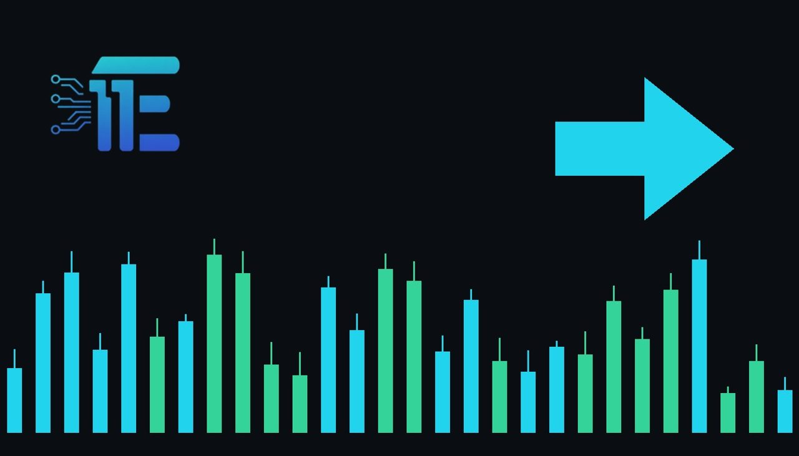

Ukraine City Truce Begins as White House Secures Ceasefireបទឈប់បាញ់ចាប់ផ្តើមនៅទីក្រុងអ៊ុយក្រែន ក្រោយសេតវិមានសម្របសម្រួល
XAU/USD impact: ◆ Mixedផលប៉ះពាល់លើ XAU/USD: ◆ ចម្រុះ

A newly initiated ceasefire in a war-affected Ukrainian city aims to allow aid access and civilian evacuations. Safe-haven demand for gold may react to shifting geopolitical stability.
បទឈប់បាញ់ថ្មីមួយក្នុងទីក្រុងអ៊ុយក្រែនមានគោលដៅអនុញ្ញាតឱ្យមានជំនួយមនុស្សធម៌និងការជម្លៀសពលរដ្ឋ។ តម្រូវការសុវត្ថិភាពសម្រាប់មាសអាចមានប្រតិកម្មទៅនឹងការផ្លាស់ប្តូរភូមិសាស្ត្រនយោបាយ។
A ceasefire has officially begun in the Ukrainian city of Oleshky, where residents previously faced severe hardships. According to the White House, the truce was successfully secured through the efforts of US First Lady Melania Trump.
បទឈប់បាញ់មួយបានចាប់ផ្តើមជាផ្លូវការនៅក្នុងទីក្រុងអស់ឡេស្គី (Oleshky) នៃប្រទេសអ៊ុយក្រែន ដែលជាទីកន្លែងប្រជាពលរដ្ឋធ្លាប់ជួបប្រទះការលំបាកយ៉ាងខ្លាំង។បើយោងតាមសេតវិមាន បបទឈប់បាញ់នេះត្រូវបានសម្រេចតាមរយៈកិច្ចខិតខំប្រឹងប្រែងរបស់លោកស្រី ម៉េឡានីយ៉ា ត្រាំ (Melania Trump) ជាភរិយាប្រធានាធិបតីអាមេរិក។
The primary objective of this agreement is to establish a secure corridor that allows essential humanitarian aid to enter the area while enabling trapped civilians to evacuate safely. Geopolitical developments of this nature directly influence safe-haven assets like XAU/USD, as shifts in conflict intensity often alter market demand for protection against systemic risks.
គោលដៅចម្បងនៃកិច្ចព្រមព្រៀងនេះគឺដើម្បីបង្កើតរបៀងសុវត្ថិភាពមួយដែលអនុញ្ញាតឱ្យជំនួយមនុស្សធម៌ដ៏ចាំបាច់អាចចូលទៅដល់តំបន់នោះ និងជួយឱ្យពលរដ្ឋរងគ្រោះអាចភៀសខ្លួនចេញដោយសុវត្ថិភាព។ ការវិវត្តផ្នែកភូមិសាស្ត្រនយោបាយបែបនេះ គឺមានទំនាក់ទំនងផ្ទាល់ជាមួយទ្រព្យសកម្មមានសុវត្ថិភាពដូចជា XAU/USD ដោយសារតែការប្រែប្រួលនៃកម្រិតជម្លោះតែងតែផ្លាស់ប្តូរតម្រូវការទីផ្សារសម្រាប់ការការពារពីហានិភ័យ។
Market participants monitor geopolitical shifts to gauge safe-haven flows into precious metals. A sustained de-escalation of hostilities can reduce demand for defensive assets, potentially pressuring gold prices. Conversely, any renewal of conflict intensity or a breakdown in localized truces typically revives safe-haven buying interest, supporting the metal.
អ្នកចូលរួមក្នុងទីផ្សារតាមដានការវិវត្តផ្នែកនយោបាយ ដើម្បីវាស់ស្ទង់លំហូរទុនសុវត្ថិភាពចូលទៅក្នុងលោហៈមានតម្លៃ។ ការថយចុះនៃអរិភាពអាចកាត់បន្ថយតម្រូវការលើទ្រព្យការពារ ដែលអាចដាក់សម្ពាធលើតម្លៃមាស។ ផ្ទុយទៅវិញ ការកើនឡើងវិញនៃភាពតានតឹង ឬការបរាជ័យនៃបទឈប់បាញ់ ដែលជាកម្លាំងទ្រទ្រង់ដល់មាស។
Traders should closely follow official diplomatic updates regarding the ceasefire implementation, humanitarian progress reports, and broader international reactions. Additionally, market attention remains tied to broader macroeconomic indicators and upcoming central bank decisions.
អ្នកជួញដូរគួរតែតាមដានយ៉ាងដិតដល់នូវព័ត៌មានបច្ចុប្បន្នភាពការទូតផ្លូវការទាក់ទងនឹងការអនុវត្តបទឈប់បាញ់ របាយការណ៍វឌ្ឍនភាពមនុស្សធម៌ និងប្រតិកម្មសេដ្ឋកិច្ចម៉ាក្រូទូទៅ។
Key takeawaysចំណុចសំខាន់ៗ
- A ceasefire has begun in Oleshky to facilitate aid and civilian evacuation.
- បទឈប់បាញ់បានចាប់ផ្តើមនៅទីក្រុង Oleshky ដើម្បីសម្រួលដល់ជំនួយនិងការជម្លៀសពលរដ្ឋ។
- Geopolitical updates influence safe-haven demand for XAU/USD.
- ព័ត៌មានភូមិសាស្ត្រនយោបាយមានឥទ្ធិពលលើតម្រូវការសុវត្ថិភាពសម្រាប់ XAU/USD។
- Traders are monitoring diplomatic progress and broader macroeconomic data.
- អ្នកជួញដូរកំពុងតាមដានវឌ្ឍនភាពការទូតនិងទិន្នន័យសេដ្ឋកិច្ចម៉ាក្រូ។
Original commentary by THE MARKET CODE, based on public reporting from BBC News. Written with the help of AI. Educational only, not financial advice.
មតិវិភាគដើមដោយ THE MARKET CODE ផ្អែកលើការរាយការណ៍សាធារណៈពី BBC News។ សរសេរដោយមានជំនួយពី AI។ មាតិកាអប់រំប៉ុណ្ណោះ មិនមែនជាដំបូន្មានហិរញ្ញវត្ថុទេ។